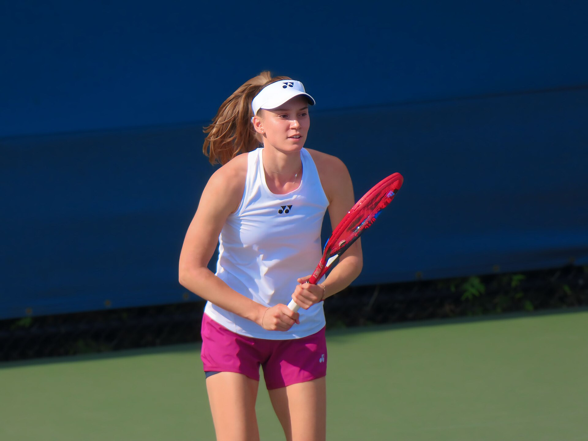

Elena Rybakina Beats Sabalenka in the US Open Final and Becomes World No. 1
The Kazakh player won 6-4, 5-7, 6-2 in the final in New York on Sept. 12. It is her third Grand Slam title.

In the women's final of the US Open at Arthur Ashe Stadium in New York on Sept. 12, 2026, Kazakhstan's Elena Rybakina defeated Belarusian player Aryna Sabalenka 6-4, 5-7, 6-2. The match lasted 2 hours 21 minutes.
It is Rybakina's third Grand Slam title of her career and her first US Open crown. She also moved to No. 1 in the world rankings.
How the final unfolded
Rybakina took the first set 6-4. Sabalenka answered 7-5 in the second set, taking the match to a deciding set. In the third set, the Kazakh player did not relinquish her advantage and won 6-2.
Sabalenka had defended the US Open title two years running and was trying for a third win.
It's hard to find words right now. I've been coming here for ten years and never had any success.
— Elena Rybakina, winner of the 2026 US Open (WTA)
The numbers
- Final score: 6-4, 5-7, 6-2
- Duration: 2 hours 21 minutes
- Rybakina's Grand Slam titles: 3
- New ranking position: No. 1 in the world
- Head-to-head with Sabalenka: 8-10
- Prize money: $5.5 million
According to CNN, the $5.5 million awarded to the winner is the highest prize money in the history of Grand Slam tournaments.
The season in context
Rybakina also won the Australian Open in January 2026, beating Sabalenka in that final as well. She thereby became the third player since 2000 to win the Australian Open and the US Open in the same season.
It was the first time since 2002 that a defending champion has lost the women's US Open final.
On the whole, I should be pleased with the level I showed. Experience shows that I only come back stronger.
— Aryna Sabalenka, finalist (WTA)
What it means for Kazakh tennis
Rybakina has represented Kazakhstan since 2018. By winning Wimbledon in 2022, she became the first player to take a Grand Slam singles title under the flag of a Central Asian country.
Over the past decade, Kazakhstan's tennis federation has expanded a program to develop international-level players by investing in infrastructure and youth academies. Rybakina's results are cited among the factors that have increased interest in tennis in the region.
For the region's diaspora in the U.S.
The rankings: the path to No. 1
Rybakina reached No. 1 in the world rankings a few days before the US Open final; the win in the final consolidated that position. Leadership in women's tennis has changed hands frequently in recent years, and few players have held the top spot for long.
Rankings in the WTA system are calculated on the basis of results over the past 52 weeks. Grand Slam tournaments award the most points, so their results have a decisive effect on the rankings.
The season's results
2026 was one of the most productive seasons of Rybakina's career: she won the Australian Open in January and took the US Open in September. Aryna Sabalenka was her opponent in both finals.
Becoming the third player since 2000 to win the Australian Open and the US Open in the same season is a statistically rare achievement.
The prize fund
The US Open prize fund has risen steadily in recent years. The $5.5 million awarded to the singles winner at the 2026 tournament was recorded as the highest figure in the history of Grand Slam tournaments.
Tennis is among the individual sports with the largest prize funds; at the same time, most of the earnings go to a small group occupying the top positions.
Kazakh tennis
Rybakina was born in Moscow and has represented Kazakhstan since 2018. Over the past fifteen years, Kazakhstan's tennis federation has expanded a network of tennis academies and recruited coaches with international experience.
By winning Wimbledon in 2022, Rybakina became the first player to take a Grand Slam singles title under the flag of a Central Asian country.
The country also has international-level players in men's tennis; Kazakhstan competes regularly in the Davis Cup and the Billie Jean King Cup.
The regional sports context
September 2026 was a dense period for sport in Central Asia. The 6th World Nomad Games concluded in Kyrgyzstan on Sept. 6; on Sept. 13, Uzbek grandmaster Javokhir Sindarov posted the best result on the first board of the Global Chess League tournament in Bengaluru; and on Sept. 15, the largest Chess Olympiad in history began in Samarkand.
Final statistics
The match went three sets and lasted 2 hours 21 minutes. That is longer than the average duration of women's Grand Slam finals.
Sabalenka still holds the advantage in the two players' head-to-head record: 10-8 in her favor. In both 2026 Grand Slam finals, however, the win went to Rybakina.
The defending champion's defeat
Sabalenka had defended the US Open title two years running and was trying for a third win. It was the first time since 2002 that a defending champion has lost the women's US Open final.
Winning three times in a row is a rare achievement in the tournament's history, explained by the density of competition in women's tennis.
Arthur Ashe Stadium
Arthur Ashe Stadium, where the final was held, is the largest tennis stadium in the world, with a capacity of more than 23,000 spectators. It is located in the Flushing Meadows complex in the Queens borough of New York.
Queens is one of New York's most multiethnic boroughs and is among the areas where communities from Central Asia live. During the US Open, the area around the stadium becomes one of the city's busiest spots.
The path through the tournament
The US Open is the fourth and final Grand Slam tournament of the season. It is played on hard courts and usually runs from late August to mid-September.
The singles draw at the tournament consists of 128 players; winning the title requires victories in seven consecutive matches.
The American audience
The US Open is among the most-watched sporting events in the United States. Hundreds of thousands of spectators come to New York during the tournament, and it is considered a significant source of revenue for the city's economy.
For communities from Central Asia, the results of the region's athletes on American courts hold particular interest — one of the connecting points between a mass cultural event in their new home and their origins.
The US Open is one of four Grand Slam tournaments and is considered among the largest sporting events in New York. For communities from Central Asia, Rybakina's victory was one of the most prominent results by the region's athletes on American courts.